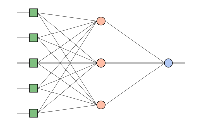

Minecraft Version Predictor
Amount of releases in the last three weeks:
Day of year:
Hours since last snapshot:
Bugs marked as fixed within the last 24 hours:
Day of week (Mon-Sun -> 1-7):
Model neurons
